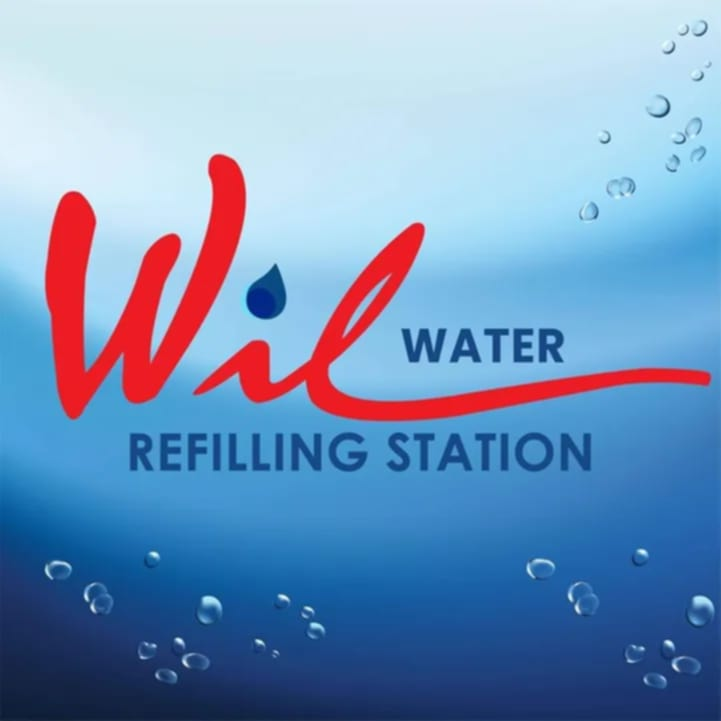
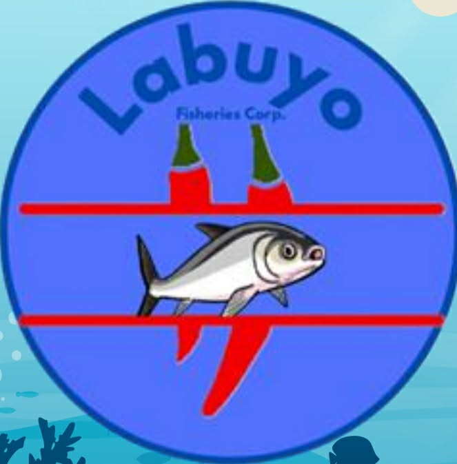
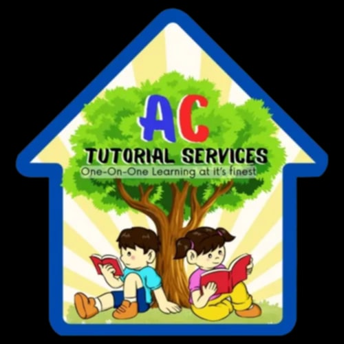

I'm Joshua Abines
I'm a
I am a dedicated Bachelor of Science in Computer Science student.
Passionate about developing efficient, user-centered systems and innovative technology solutions.
I am a dedicated Bachelor of Science in Computer Science student.
Passionate about developing efficient, user-centered systems and innovative technology solutions.
I’m a Computer Science student who’s eager to gain real-world experience and improve my skills through hands-on learning. I have a strong interest in technology, programming, and problem-solving. I’m always willing to learn new things, adapt to challenges, and give my best in every task. My goal is to grow as a learner while contributing positively to the team and the organization.
My ResumeColegio De San Pascual Baylon
Bachelor of Science in Computer Science
2022 – PresentHE Strand
2020 – 2022Obando National High School
2016 – 2020Obando Central School
2010 – 2016Understanding of UI/UX design principles and visual hierarchy.
Experienced in web development(HTML, CSS, JavaScript)
Knowledge of mobile application development using Flutter Flow.
Experienced in System Development

During my first year in 2022, we developed a simple website called SP Water District. This project focused on learning the fundamentals of web development. At that time, we only used HTML and CSS, which allowed us to build the structure and design of the website.

During the second semester of my first year, we developed another website called Labuyo. This project introduced us to backend development using PHP, allowing the website to handle dynamic content and server-side processing.

In my second year, we developed a more advanced web-based system called AC Tutorial Service. This project was a full website system designed to manage the schedules of teachers and tutors.
In 2024–2025, we developed a more advanced project called Pulse PH, which is a web application created using FlutterFlow. Compared to our previous projects, this system was more complex because it involved modern low-code development tools and mobile-style web application design.
+639995881529
joshuaabines993@gmail.com
Wawang Pulo Valenzuela City, Philippines